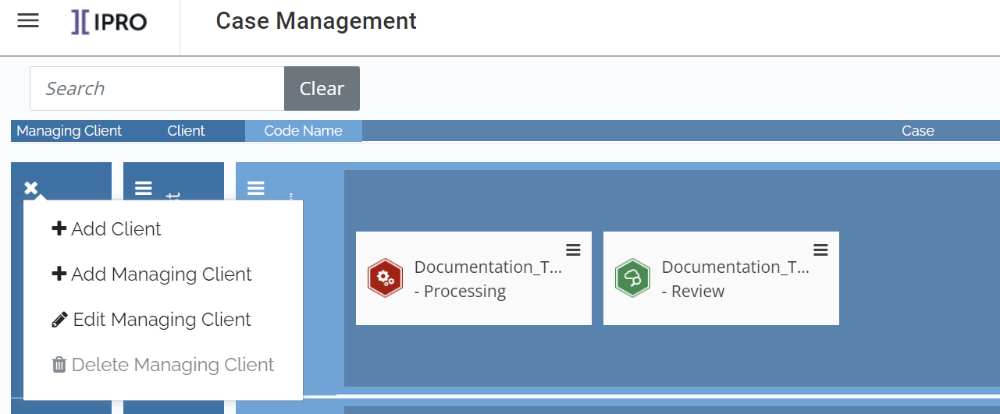

Note: In the
Complete the following steps to define managing clients
and clients in
Names for managing clients and clients – consider naming conventions to help ensure consistency and clear identification.
Location of your data directory. This is an existing folder in which case and related files are located. It must be a UNC path and a location to which all

|
|
Note: In the |
Click Case Management
on the
To create a managing client:
Click  in
the Managing Client column
and select Managing Client.
in
the Managing Client column
and select Managing Client.
|
|
Note: Click
the |
Enter the required name and click Save.
To create a client:
Click
in the Managing
Client column and select
Client.
Enter the client’s name.
Optional: Select a different managing client.
Enter the required data directory (full path and folder name in UNC format). The folder must exist.
Optional: To define a new case for this client immediately after defining it, select the Launch Create Case on Save option.
Click Save.
Repeat these steps to define additional managing clients and clients.
|
|
Note: Additional
(product-specific) details can be defined in |
Related Topics